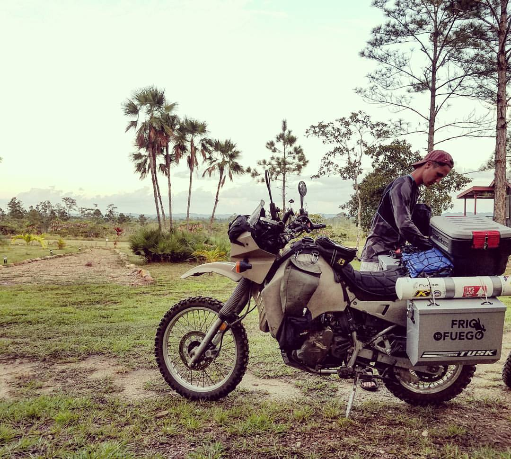
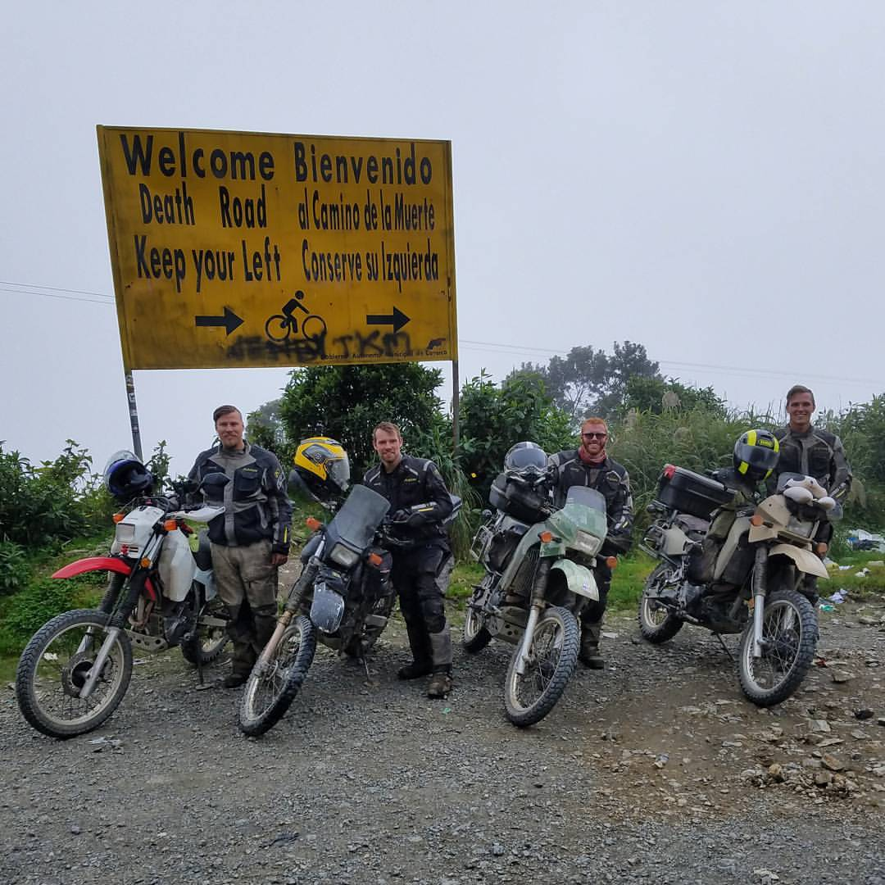

Frio to Fuego Facebook
October, 2016 - June, 2017
Trip: Motorcycling across the western hemisphere with three of my best friends for 6 months.
Me with my bike in Belize

Immediately after my master’s program at Michigan, on a whim, I signed up to take the local motorcycle safety course with one of my best friends. This was the first time I ever really touched a motorcycle and it changed my life at age 23. I had grown up riding bicycles and road tripping around the country, but had never combined the freedom of a bicycle with the distances available by car in the way a motorcycle does. Almost simultaneously with that first ride, I turned to my friend, Jake, and told him “Jake, I’m going to motorcycle around the world one day.” And I guess I’m that special kind of crazy that follows through on fantasies like those. 2.5 years later, after wrapping things up at Project Birdhouse, I hit the road with him and two of my other best friends, Chazz and Tommy, to ride from Canada to the southern tip Argentina for 6+ months.
Tommy, Chazz, Jake, and Me after riding Death Road in Bolivia

We started near Toronto, Canada and made our way down through Mexico, Belize, Guatemala, and into El Salvador. We kicked back on the beach for the better part of a month in El Salvador, waiting for replacement parts being shipped in from the states, before continuing south. We made our way down through Honduras, Nicaragua, Costa Rica, and into Panama where we put our bikes on a cargo ship to Santiago, Chile while we flew down to meet them there. After a bit of a fiasco with the logistics company, we were reunited with our motorcycles and made our way through the beautiful expanse of Patagonia in Chile and Argentina. Once we reached the southern tip at Ushuaia, we turned around and zipped up north to Bolivia, over to Peru, and up to Ecuador. Our group split in two in Ecuador and I continued on to Colombia with Tommy while Jake and Chazz stayed in Quito, Ecuador to sell their bikes and begin their trip home. Tommy and I split ways in Colombia and he sold his bike in Bogota, Colombia while I continued up to Cartagena. Over the next 5 months I slowly made my way up from Colombia back to Panama, Costa Rica, and Nicaragua, working as a freelance software developer along the way. After wrapping up a large contract with iReportSource around Christmas 2017, I decided to focus solely on travel again and have been meandering my way northwards since.
Throughout this whirlwind adventure through Latin America, I have learned about motorcycle maintenance, how to speak Spanish significantly better, and how to be comfortable in any and every environment. I met locals and other travelers from all parts of the world, and have developed a small personal mission to raise my voice against the culture of fear that has developed about travel. Throughout the planning process, the trip itself, and even after, my friends, family, and random people I meet constantly express their fear of me traveling through these ‘rough’ parts of the world - the Mexican cartel, the Colombian civil war, the Honduran crime, etc. And throughout 18 months of intimate experiences throughout all of these ‘rough’ regions, I have only met the most wonderful, supportive, and caring people.
I’m still exploring what’s next for me and how exactly I want to balance my passion for this type of culturally immersive travel and my desire to build new businesses and technologies. But I know with confidence that I will carry what I’ve learned into any path I choose.
Continue to read more about building a single page web application for iReportSource.